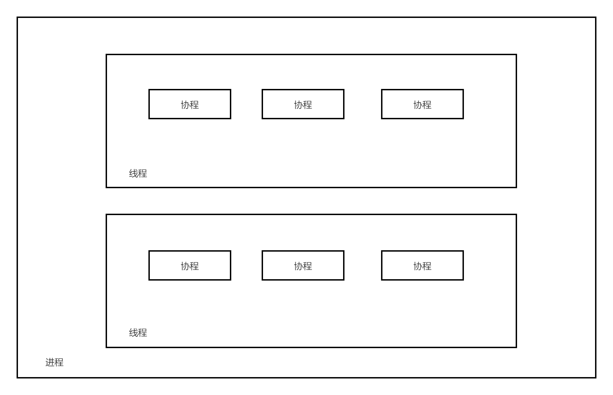

Introduction
本书主要介绍 Rust 中 async/await 语法和异步运行时的原理和工作机制，并不涉实际的异步代码编写。全书的内容主要分为以下几个章节：
-
异步编程：介绍 Rust 异步编程的基础概念，以及在 Rust 中应用的异步模型。
-
async/await：介绍Rust为支持异步编程而提供的语言层面的支持，包括
async/await语法和它们的工作原理。 -
IO 模型：介绍几种主要的 IO 模型，包括阻塞 IO、非阻塞 IO、IO 多路复用和异步 IO，其中 IO 多路复用是后文介绍
Epoll的基础。 -
Epoll：介绍
Epoll的工作原理并提供一个简单的Epollserver 的实现例子。Epoll是 Linux 中 IO 多路复用的一种实现，是后文介绍异步运行时的基础。 -
异步运行时：通过实现一个简单的异步运行时来介绍
Reactor、Waker、Executor、Task的基本概念。
References
- https://rust-lang.github.io/async-book/03_async_await/01_chapter.html
- https://www.zhihu.com/question/389262477/answer/1566255353
- https://doc.rust-lang.org/std/keyword.async.html
- https://doc.rust-lang.org/std/keyword.await.html
- https://doc.rust-lang.org/std/future/trait.Future.html
- https://cfsamson.github.io/books-futures-explained/1_futures_in_rust.html#futures-in-rust
- https://doc.rust-lang.org/std/task/struct.Context.html
- https://rust-lang.github.io/async-book/02_execution/02_future.html
- https://github.com/ZhangHanDong/inviting-rust
- https://doc.rust-lang.org/std/ops/trait.Generator.html
- https://doc.rust-lang.org/std/ops/enum.GeneratorState.html
- https://github.com/rust-lang/rust/blob/master/library/core/src/future/mod.rs
- https://ipotato.me/article/70
- https://cfsamson.github.io/books-futures-explained/4_generators_async_await.html
- https://rust-lang.github.io/async-book/01_getting_started/04_async_await_primer.html
- https://rust-lang.github.io/async-book/01_getting_started/02_why_async.html
- https://cfsamson.github.io/books-futures-explained/5_pin.html
- https://rust-lang.github.io/async-book/04_pinning/01_chapter.html
- https://folyd.com/blog/rust-pin-unpin/
- https://doc.rust-lang.org/std/pin/struct.Pin.html
- https://www.masterraghu.com/subjects/np/introduction/unix_network_programming_v1.3/ch06lev1sec2.html
- https://www.cnblogs.com/alex3714/articles/5876749.html
- https://www.jianshu.com/p/31cdfd6f5a48
- https://zhuanlan.zhihu.com/p/92617116
- https://github.com/zupzup/rust-epoll-example
- https://github.com/mmisono/aa_echo
- https://os.phil-opp.com/async-await
异步编程
为了避免歧义，本书中的异步编程特指在 Rust 中使用 async/await 关键字进行编写异步代码。
通过 async 关键字创建的异步函数或者异步块会返回一个实现了 Future trait 的类型，其本质上是一个协程对象。将 async/await 关键字和异步运行时结合使用就可以实现对多个协程对象的调度执行，从而达到并发执行的效果。
在 Rust 中主要应用的是 进程—线程—协程 异步模型，如下所示：

下层是进程，进程是持有资源的最小单位；中层是线程，线程不持有资源，是CPU调度的最小单位；上层是协程，协程既不持有资源、也不在意CPU的调度，它仅仅关注的是“协作式的、自然的流程切换”。
异步运行时就负责调度执行上述的协程对象。例如在一个协程在等待 IO 时，这个协程会主动出让自己的执行权给异步运行时，这时异步运行时可以调度运行其他的协程，从而最大化地利用CPU时间片。在 IO 密集型的应用中，异步编程将能够极大地提高执行效率。
async/await
在 fn、closure、block前使用 async 关键字，会将标记的代码转化为一个 Future。因此，async 标记的代码不会立即运行，只有在 Future 上调用 .await 时才会计算运行 Future。而在 await 一个 Future 时，会暂停当前函数的执行，直到 executor 完成对该 Future 的计算。
以上是对 async/await 语义的基本介绍。在本章中，我们将会更加深入地介绍 async/await 的使用和它们的底层原理。
async/await 的使用
async/await 是 Rust 中特殊的语法，它使得让出当前线程的控制权而不阻塞线程成为可能，从而允许在等待一个操作完成时可以运行其他代码。
有两种主要的方式使用 async：async fn 和 async {}。这两中使用方式都会返回一个实现了 Future trait 的值：
// `foo()` 返回一个实现了 `Future<Output = u8>` 的类型。
// `foo().await` 将会产生一个 u8 类型的值。
async fn foo() -> u8 { 5 }
fn bar() -> impl Future<Output = u8> {
// 这个 `async` 块会产生一个实现了 `Future<Output = u8>` 的类型。
async {
let x: u8 = foo().await;
x + 5
}
}
async fn 和 async {} 返回的 Future 是惰性的：在真正开始运行之前它什么也不会做。运行一个 Future 的最普遍的方式是 await 这个 Future： Future.await。
当 await 一个 Future 时，会暂停当前函数的运行，直到完成对 Future 的运行。如果这个 Future 被阻塞住了（例如等待网络IO），它会让出当前线程的控制权。当 Future 中的阻塞操作就绪时（例如等待的网络IO返回了响应），executor 会通过 poll 会恢复 Future 的运行。
async lifetime
与普通的函数不一样，async fn 会获取引用或其他非静态生命周期的参数，然后返回被这些参数的生命周期约束的 Future：
async fn foo(x: &u8) -> u8 { *x }
// 这与上面的函数完全等价
fn foo_expanded<'a>(x: &'a u8) -> impl Future<Output = u8> + 'a {
async move { *x }
}这意味着，async fn 返回的 Future 必须在非静态生命周期参数仍然有效时 .await。在大多数情况下，我们在调用 async 函数后会立马 .await（例如 foo(&x).await），因此 async lifetime 不会对执行产生什么影响。但是，如果我们存储这种 Future 或者发送给其他的 task 或者 thread，就可能会造成问题。
把带有引用参数的 async fn 转化为静态 Future 的解决方法是：把参数和对 async fn 的调用封装到 async 块中：
fn bad() -> impl Future<Output = u8> {
let x = 5;
borrow_x(&x) // ERROR: `x` does not live long enough
}
fn good() -> impl Future<Output = u8> {
async {
let x = 5;
borrow_x(&x).await
}
}通过把参数移动到 async 块中，我们把它的生命周期扩展到了匹配调用 good 返回的 Future 的生命周期。
async move
async 块和闭包允许像普通闭包那样使用 move 关键字。一个 async move 块会获取变量的所有权，但是这会导致无法与其他的代码共享这些变量：
// 不同的 async 块可以访问相同的变量s，只要它们都在s的作用域范围内执行
async fn blocks() {
let s = String::new("Hello World");
let future_one = async {
println!("{:?}", s);
};
let future_two = async {
println!("{:?}", s);
};
futures::future::join(future_one, future_two); // need run in cargo with futures crate
}
// s 被 move 进行 async 块中，因此只能在该 async 块内才能访问
fn move_block() -> impl Future<Output = ()> {
let s = String::from("Hello World");
async move {
println!("{:?}", s);
}
}Future trait
在前文中，我们提到使用 async 标记的 fn、block、closure 都会返回一个 Future，本节将会详细地介绍 Future 的概念。
在标准库中，Future 的定义如下所示：
pub trait Future {
type Output; // Future计算完成时产生的值的类型
fn poll(self: Pin<&mut Self>, cx: &mut Context<'_>) -> Poll<Self::Output>;
}Future 表示一个异步计算，或者说会在未来完成计算的操作。Future 的核心是 poll 方法，当调用 poll 方法时会尝试计算 Future 得到最终的值。如果值还没有准备好（例如等待某些事件发生），则此方法不会阻塞，而是会直接返回一个结果表示 Future 还没有计算完毕。
注意：
Future trait中涉及到的Pin将会在后面的章节中介绍。
poll
在上面对 Future 的介绍中，我们简要提到了 poll 方法，下面我们会对 poll 方法进行更详细的介绍。当调用 Future 的 poll 方法时会返回一个枚举类型的值：
Poll::Pending，表示这个Future还没计算完成Poll::Ready(val)，表示这个Future计算完毕，并附带计算结果：val
如果 Future 没有计算完成，例如想要等待一个 IO 事件发生，那么在 poll 方法体内，我们通常会调用传递给 poll 方法的 Context 的 waker 方法拿到一个 Waker（通常把 Waker 叫做唤醒器），然后注册这个 Waker 到一个“事件通知系统”中，最后返回 Pending 表示 Future 没有计算完成。
在未来某一时刻，Future 等待的 IO 事件就绪了，那么“事件通知系统”就会利用我们注册的 Waker 通过某种唤醒机制唤醒这个 Future，通过 poll 继续计算执行该 Future。
通过 Waker 唤醒器，我们可以只在 Future 想要等待的事件就绪时，才去唤醒 Future。这样我们就不需要通过一个死循环不断的调用 poll 方法来驱动 Future 的执行，这是异步编程之所以高效的关键所在。
小栗子
下面我们使用一个具体的例子来介绍 Future trait 的使用。
假设我们准备读取一个 socket，但是它可能还没有准备好数据。如果数据准备好了，我们就可以读取它然后然后返回 Poll::Ready(data)，但是如果数据没有准备好，我们可以注册一个唤醒器到“事件通知系统”中：
struct SocketRead<'a> {
socket: &'a Socket
}
impl<'a> Future for SocketRead<'a> {
type Output = Vec<u8>;
fn poll(self: Pin<&mut Self>, cx: &mut Context<'_'>) -> Poll<Self::Output> {
let data = self.socket.no_block_read::<Option<Vec<u8>>>(1024);
match data {
Some(data) => Poll::Ready(data),
None => {
REACTOR.registe_waker_and_event(self.socket, Type::Read, cx.waker().clone());
Poll::Pending
}
}
}
}代码中的 REACTOR 就是前文中所提到过的“事件通知系统”。当 socket 中有数据可读时，REACTOR 就会使用注册的 Waker 唤醒负责 SocketRead ，然后调用 poll 方法再次计算该 Future。
Leaf / Non-leaf Future
在前文中我们提到使用 async 关键字可以创建一个 Future 类型，而在上面的小栗子中我们通过实现 Future trait 的方式也创建了一个 Future 类型，那么这两个 Future 有什么区别呢？
Leaf Future
通过为我们的自定义类型实现 Future trait 的方式创建的 Future 被称为 Leaf Future。例如上面的小栗子中的 SocketRead 类型：
struct SocketRead<'a> {
socket: &'a Socket
}
impl<'a> Future for SocketRead<'a> {
/
}Leaf Future 中通常会涉及到对 IO 的操作，例如从一个 socket 中读取数据，并且对 IO 的操作是非阻塞式的。
当调用异步运行时提供的异步读 socket 的方法时就会返回上述的 Future：
impl async_runtime {
fn read_socket(&self) -> SocketRead {
// ...
}
}
let mut leaf_future: SocketRead = async_runtime.read_socket();通常情况下，这些 Leaf Future 都是由异步运行时自己创建的，用户只需要使用 async/await 关键字即可。
Non-leaf Future
Non-leaf Future 是我们使用 async 关键字创建 Future，并且会由 async runtime 来调度运行。
在 Non-leaf Future 中可以创建多个 Leaf Future， 并且通过 await Leaf Future 来完成对 IO 的操作：
let non_leaf_future = async {
let data = async_runtime.read_socket().await;
println!("Receive data: {:?}", data);
let data = async_runtime.read_socket().await;
println!("Receive data: {:?}", data);
let data = async_runtime.read_socket().await;
println!("Receive data: {:?}", data);
}在 await 一个 Leaf Future 时，如果返回的是 Pending，那么Non-Leaf Future 就会让出对当前线程的控制权，此时 async runtime 就能够调度执行其他的 Non-Leaf Future 。当 Non-Leaf Future 中的 IO 操作就绪时，async runtime 就会重新激活挂起的 Future，在上次离开的地方继续运行。
Generator
Future 的底层依赖于生成器，因此在本节中我们将会介绍生成器的概念，以及生成器是如何转化为 Future 的。
Generator 定义
Generator 的定义位于标准库的 ops 模块中，具体如下所示：
pub trait Generator<R = ()> {
type Yield;
type Return;
fn resume(
self: Pin<&mut Self>,
arg: R
) -> GeneratorState<Self::Yield, Self::Return>;
}
pub enum GeneratorState<Y, R> {
Yielded(Y),
Complete(R),
}Generator 通常也被称为协程，主要目的是为 async/await 语法提供构建块，但是未来也可能会扩展到为 Iterator 和其他类型提供符合人体工程学的定义。
Generator 的关联类型 Yield 对应于使用yield 表达式产出的值的类型。
Generator 的关联类型 Return 对应于使用 return 语句或者生成器中的最后一个表达式返回的值的类型。
注意：
Generator trait中涉及到的Pin将会在后面的章节中介绍。
resume
调用 Generator 的 resume 方法会恢复生成器的运行，如果还没有启动生成器的话则会启动生成器。
在执行生成器的过程中，如果遇到 yield 表达式，那么生成器就会在这个 yield 点挂起，并产出 yield 表达式的值：GeneratorState::Yielded(Y)。当再次调用 resume 方法时生成器就会在挂起的 yield 点恢复运行。
在运行过程中，如果遇到的是 return 语句或者生成器末尾的最后一个表达式，那么生成器执行完毕，并返回 GeneratorState::Complete(R)，R 就是 return 语句或者末尾表达式的值。
如果生成器已经执行完毕，返回了 GeneratorState::Complete，那么当再次调用 Generator 的 resume 方法时将会导致 panic。
Generator 使用
在闭包中使用 yield 关键字就可以创建一个生成器：
#![feature(generators, generator_trait)] use std::pin::Pin; use std::ops::{Generator, GeneratorState}; fn main() { let mut gen = || { let mut i = 1; while i < 10 { yield i; i += 1; } return (); }; loop { match Pin::new(&mut gen).resume(()) { GeneratorState::Yielded(y) => println!("Yielded: {}", y), GeneratorState::Complete(r) => { println!("Complete: {:?}", r); break; } } } }
通过为自定义类型实现 Generator trait 来创建生成器：
#![feature(generators, generator_trait)] use std::pin::Pin; use std::ops::{Generator, GeneratorState}; fn main() { let mut gen = MyGenerator { i: 1, completed: false }; loop { match Pin::new(&mut gen).resume(()) { GeneratorState::Yielded(y) => println!("Yielded: {}", y), GeneratorState::Complete(r) => { println!("Complete: {:?}", r); break; } } } } struct MyGenerator { i: i32, completed: bool } impl<R> Generator<R> for MyGenerator { type Yield = i32; type Return = (); fn resume(self: Pin<&mut Self>, _arg: R) -> GeneratorState<Self::Yield, Self::Return> { if self.completed { panic!("MyGenerator has been completed."); } let i = self.i; if i < 10 { self.get_mut().i = i + 1; GeneratorState::Yielded(i) } else { self.get_mut().completed = true; GeneratorState::Complete(()) } } }
把生成器当作迭代器使用：
#![feature(generators, generator_trait)] use std::pin::Pin; use std::iter::Iterator; use std::ops::{Generator, GeneratorState}; fn main() { let gen = MyGenerator { i: 1, completed: false }; for val in gen { println!("Got: {}", val); } } struct MyGenerator { i: i32, completed: bool } impl<R> Generator<R> for MyGenerator { type Yield = i32; type Return = (); fn resume(self: Pin<&mut Self>, _arg: R) -> GeneratorState<Self::Yield, Self::Return> { if self.completed { panic!("MyGenerator has been completed."); } let i = self.i; if i < 10 { self.get_mut().i = i + 1; GeneratorState::Yielded(i) } else { self.get_mut().completed = true; GeneratorState::Complete(()) } } } impl Iterator for MyGenerator { type Item = i32; fn next(&mut self) -> Option<Self::Item> { match Pin::new(self).resume(()) { GeneratorState::Yielded(y) => Some(y), GeneratorState::Complete(_) => None } } }
From Generator to Future
Rust 的 core 库中的 future 模块定义了将生成器转化为 Future 的函数（为了便于阅读去掉了注释部分）：
pub const fn from_generator<T>(gen: T) -> impl Future<Output = T::Return>
where T: Generator<ResumeTy, Yield = ()>
{
struct GenFuture<T: Generator<ResumeTy, Yield = ()>>(T);
impl<T: Generator<ResumeTy, Yield = ()>> !Unpin for GenFuture<T> {}
impl<T: Generator<ResumeTy, Yield = ()>> Future for GenFuture<T> {
type Output = T::Return;
fn poll(self: Pin<&mut Self>, cx: &mut Context<'_>) -> Poll<Self::Output> {
let gen = unsafe { Pin::map_unchecked_mut(self, |s| &mut s.0) };
match gen.resume(ResumeTy(NonNull::from(cx).cast::<Context<'static>>())) {
GeneratorState::Yielded(()) => Poll::Pending,
GeneratorState::Complete(x) => Poll::Ready(x),
}
}
}
GenFuture(gen)
}从源码中可以看出，实际上我们使用 async 创建的 Future 是一个实现了 Future trait 的结构体 GenFuture，这个结构体的内部是一个生成器。
在我们调用 Future 的 poll 方法时，实际上就是在调用底层的生成器的 resume 方法，并且生成器返回的 GeneratorState::Yielded/Complete(val) 会被分别转化为 poll 的返回类型：Poll::Pending/Ready(val)。
小栗子
在本节的最后，我们通过一个小栗子把前面讲的 async/await、Future、Generator 的知识串联起来。
有如下的代码：
#![allow(unused)] fn main() { #[inline(never)] async fn foo() -> i32 { 10 } #[inline(never)] async fn bar() -> i32 { foo().await } }
HIR 是 Rust 代码编译的中间产物，可以帮助我们直到代码在脱糖后是什么样子。可以使用 Rust Playground 的 HIR 功能编译上述代码，结果如下：
#[inline(never)]
async fn foo()
->
/*impl Trait*/ #[lang = "from_generator"](move |mut _task_context|
{ { let _t = { 10 }; _t } })
#[inline(never)]
async fn bar()
->
/*impl Trait*/ #[lang = "from_generator"](move |mut _task_context|
{
{
let _t =
{
match #[lang = "into_future"](foo()) {
mut pinned =>
loop {
match unsafe {
#[lang = "poll"](#[lang = "new_unchecked"](&mut pinned),
#[lang = "get_context"](_task_context))
} {
#[lang = "Ready"] { 0: result } => break result,
#[lang = "Pending"] {} => { }
}
_task_context = (yield ());
},
}
};
_t
}
})原生的 HIR 代码难以阅读，我们将其转化为下面的 Rust 伪代码：
#[inline(never)]
async fn foo() -> impl Future<Output = i32> {
from_generator(move |mut _task_context| {
let _t = 10;
_t
})
}
#[inline(never)]
async fn bar() -> impl Future<Output = i32> {
from_generator(move |mut _task_context| {
let _t = {
match into_future(foo()) {
mut pinned => {
loop {
match unsafe Pin::new_unchecked(&mut pinned).poll(get_context(_task_context)) {
Poll::Ready(result) => break result,
Poll::Pending => {}
}
_task_context = (yield ());
}
}
}
};
_t
})
}可以看到 async 函数体内的代码被转化成了一个生成器，然后再调用 from_generator 函数传入生成器创建一个 Future ，这与我们上面介绍的 from_generator 函数的功能一致。
await 部分则被转化为了一个无限循环，在循环的内部会调用 await 的 Future 的 poll 方法，如果结果是 Poll::Ready，则终止循环并返回 result，继续执行剩余的代码；如果结果是 Poll::Pending，则会使用 yield 挂起生成器，将控制权转移给调用方。当调用方激活这个挂起的生成器时，生成器就会恢复运行，执行循环体中的代码。
因此，只有当 await 的 Future 执行完毕时，才会继续往下执行 async 块中的代码，这样就确保了能够以同步的方式编写异步代码，让我们能拥有良好的开发体验。
状态机
在上一节中，我们讲到生成器执行到 yield 表达式时，会在这个 yield 点挂起，当再次激活生成器时会在挂起的 yield 点恢复运行，那么生成器是怎么保存在 yield 点挂起时的状态呢？
事实上，编译器会把生成器转化为一个状态机，状态机中会保存每一个 yield 点的生成器的执行状态。
假如我们写了一个如下所示的生成器：
#![feature(generators, generator_trait)] use std::pin::Pin; use std::ops::{Generator, GeneratorState}; fn main() { let mut gen = || { yield 1; yield 2; () }; loop { match Pin::new(&mut gen).resume(()) { GeneratorState::Yielded(y) => println!("Yielded: {}", y), GeneratorState::Complete(c) => { println!("Complete: {:?}", c); break; } } } }
编译器会把生成器转化为下面的代码：
#![feature(generators, generator_trait)] use std::pin::Pin; use std::ops::{Generator, GeneratorState}; fn main() { let mut gen = Gen::new(); loop { match Pin::new(&mut gen).resume(()) { GeneratorState::Yielded(y) => println!("Yielded: {}", y), GeneratorState::Complete(c) => { println!("Complete: {:?}", c); break; } } } } enum Gen { Enter, State1(State1), State2(State2), Exit } struct State1 { _x: i32 } struct State2 { _x: i32 } impl<R> Generator<R> for Gen { type Yield = i32; type Return = (); fn resume(self: Pin<&mut Self>, _arg: R) -> GeneratorState<Self::Yield, Self::Return> { let mut_gen = self.get_mut(); match std::mem::replace(mut_gen, Gen::Exit) { Gen::Enter => { *mut_gen = Gen::State1(State1 { _x: 1 }); GeneratorState::Yielded(1) } Gen::State1(_) => { *mut_gen = Gen::State2(State2 { _x: 2 }); GeneratorState::Yielded(2) } Gen::State2(_) => { *mut_gen = Gen::Exit; GeneratorState::Complete(()) } Gen::Exit => panic!("Generator has been completed.") } } } impl Gen { fn new() -> Self { Self::Enter } }
同时，由于每个 async 函数最终都会生成一个状态机，并且每个可执行文件都会捆绑一个异步运行时，这会导致异步的 Rust 代码在编译后产生更大的二进制体积，这也是 async Rust 的一个小缺点。
Pin
前文的 Future trait、Geneartor 和状态机中都出现了 Pin，那么 Pin 到底有什么用呢？ 在本节中，我们将会详细地介绍它。
自引用结构
在 Safe Rust 中，我们无法创建自引用结构体：
fn main() { let s = "Hello World".to_string(); let _ = SelfReference { a: s, b: &s }; } struct SelfReference<'a> { a: String, b: &'a String }
如果编译，将会发生报错：
error[E0382]: borrow of moved value: `s`
--> src/main.rs:5:12
|
2 | let s = "Hello World".to_string();
| - move occurs because `s` has type `String`, which does not implement the `Copy` trait
3 | let _ = SelfReference {
4 | a: s,
| - value moved here
5 | b: &s
| ^^ value borrowed here after move这是因为 s 已经发生了 move，因此 b 就不能借用已经 move 了的 s。
为了创建自引用结构，我们需要使用裸指针：
fn main() { let mut sr_1 = SelfReference::new("Hello"); sr_1.init(); let mut sr_2 = SelfReference::new("World"); sr_2.init(); println!("sr_1: {{ a: {}, b: {} }}", sr_1.get_a(), sr_1.get_b()); println!("sr_2: {{ a: {}, b: {} }}", sr_2.get_a(), sr_2.get_b()); } #[derive(Debug)] struct SelfReference { a: String, b: *const String } impl SelfReference { fn new(msg: &str) -> Self { Self { a: msg.to_string(), b: std::ptr::null() } } fn init(&mut self) { let ptr_to_a = &self.a as *const _; self.b = ptr_to_a; } fn get_a(&self) -> &str { &self.a } fn get_b(&self) -> &str { unsafe { &*self.b } } }
编译运行，结果如下所示：
sr_1: { a: Hello, b: Hello }
sr_2: { a: World, b: World }接下来，让我们交换 sr_1 和 sr_2 的内存位置的数据，即 sr_1 和 sr_2 互相 move 给对方：
fn main() { let mut sr_1 = SelfReference::new("Hello"); sr_1.init(); let mut sr_2 = SelfReference::new("World"); sr_2.init(); println!("Before swap:"); println!("sr_1: {{ a: {}, b: {} }}", sr_1.get_a(), sr_1.get_b()); println!("sr_2: {{ a: {}, b: {} }}", sr_2.get_a(), sr_2.get_b()); std::mem::swap(&mut sr_1, &mut sr_2); println!("\nAfter swap:"); println!("sr_1: {{ a: {}, b: {} }}", sr_1.get_a(), sr_1.get_b()); println!("sr_2: {{ a: {}, b: {} }}", sr_2.get_a(), sr_2.get_b()); } #[derive(Debug)] struct SelfReference { a: String, b: *const String } impl SelfReference { fn new(msg: &str) -> Self { Self { a: msg.to_string(), b: std::ptr::null() } } fn init(&mut self) { let ptr_to_a = &self.a as *const _; self.b = ptr_to_a; } fn get_a(&self) -> &str { &self.a } fn get_b(&self) -> &str { unsafe { &*self.b } } }
编译运行，结果如下所示：
Before swap:
sr_1: { a: Hello, b: Hello }
sr_2: { a: World, b: World }
After swap:
sr_1: { a: World, b: Hello }
sr_2: { a: Hello, b: World }可以看出，在交换 sr_1 和 sr_2 后，字段 a 的数据也发生了交换，但是字段 b 的数据没有改变，仍然指向之前的位置，如图所示：

这意味着，sr（sr_1、sr_2）将不再是自引用结构体，并保存了一个指向其他对象的裸指针。因此，sr 的字段 b 的生命周期将不再和其结构体本身相关联，我们将难以保证 sr.b 指针不会变成悬垂指针。
在上面的例子中，由于使用 swap 函数导致出现了我们不想要的结果，在后续的代码中对 sr 的使用很可能会出现段错误、UB 等其他类型的错误。
Let's pin it!
Rust 是一门极为注重内存安全的语言，为了能够安全地使用自引用结构，Rust 发明了 Pin。
Pin
Pin 位于 std 库的 pin 模块中，源代码定义如下所示：
#[stable(feature = "pin", since = "1.33.0")]
#[lang = "pin"]
#[fundamental]
#[repr(transparent)]
#[derive(Copy, Clone)]
pub struct Pin<P> {
pointer: P,
}
#[stable(feature = "pin", since = "1.33.0")]
impl<P: Deref> Deref for Pin<P> {
type Target = P::Target;
fn deref(&self) -> &P::Target {
Pin::get_ref(Pin::as_ref(self))
}
}
#[stable(feature = "pin", since = "1.33.0")]
impl<P: DerefMut<Target: Unpin>> DerefMut for Pin<P> {
fn deref_mut(&mut self) -> &mut P::Target {
Pin::get_mut(Pin::as_mut(self))
}
}Pin 实现了 Deref 和 DerefMut trait，因此 Pin 是一个智能指针。并且 Pin 的内部包裹了另一个指针 P，因此我们一般使用 Pin<P<T>> 的方式来表示一个 Pin 结构（T 是指针 P 指向的类型）。
既然有 Pin，那么自然就有 Unpin，那么 Unpin 是什么呢？Unpin 是一个 auto trait，编译器会默认为所有的类型实现 Unpin，除非这些类型实现了 !Unpin。
要想获取 Pin<P<T>> 中 T 的可变引用 &mut T，可以使用 Pin 提供的 get_mut 方法，这也是 Pin 提供的 api 中唯一可以安全地获取 &mut T 的方法，其函数签名如下所示：
pub fn get_mut(self) -> &'a mut T
where
T: Unpin,发现了吗？要想安全地拿到 &mut T，T 就必须实现 Unpin。如果 T 实现了 !Unpin，那么就不可能安全地拿到 T 的可变引用，我们自然也就无法使用 std::mem::swap(x: &mut T, y: &mut T) 等类似的函数 move T，就不会发生前文的例子中出现的未定义行为。
因此，Pin<P<T>> 利用 Rust 的类型系统保证：如果 T 实现了 !Unpin，那么就不可能在 Safe Rust 中获取 T 的可变引用。相反，如果 T 实现了 Unpin，那么 Pin 就仅仅是对 P<T> 的一层包装，我么可以随意地拿到 &mut T。
接下来，我们将会使用 Pin 解决上面的那个例子中出现的问题。
Pin to stack
Pin 到栈上是指我们想要 Pin 住的值在栈上，使用 Pin::new_unchecked 函数把 &mut T 包装成 Pin<&mut T> 即可：
#![feature(negative_impls)] use std::pin::Pin; fn main() { let mut sr_1 = SelfReference::new("Hello"); let mut sr_1 = unsafe { Pin::new_unchecked(&mut sr_1) }; sr_1.as_mut().init(); let mut sr_2 = SelfReference::new("World"); let mut sr_2 = unsafe { Pin::new_unchecked(&mut sr_2) }; sr_2.as_mut().init(); println!("Before swap:"); println!("sr_1: {{ a: {}, b: {} }}", sr_1.as_ref().get_a(), sr_1.as_ref().get_b()); println!("sr_2: {{ a: {}, b: {} }}", sr_2.as_ref().get_a(), sr_2.as_ref().get_b()); println!("If we want to swap:"); std::mem::swap(sr_1.get_mut(), sr_2.get_mut()); } #[derive(Debug)] struct SelfReference { a: String, b: *const String } impl !Unpin for SelfReference {} impl SelfReference { fn new(msg: &str) -> Self { Self { a: msg.to_string(), b: std::ptr::null() } } fn init(self: Pin<&mut Self>) { let ptr_to_a = &self.a as *const _; unsafe { self.get_unchecked_mut().b = ptr_to_a; } } fn get_a(self: Pin<&Self>) -> &str { &self.get_ref().a } fn get_b(self: Pin<&Self>) -> &str { unsafe { &*self.b } } }
此时代码将不会通过编译：
error[E0277]: `SelfReference` cannot be unpinned
--> src/main.rs:18:25
|
18 | std::mem::swap(sr_1.get_mut(), sr_2.get_mut());
| ^^^^^^^ the trait `Unpin` is not implemented for `SelfReference`
|
= note: consider using `Box::pin`
note: required by a bound in `Pin::<&'a mut T>::get_mut`
error[E0277]: `SelfReference` cannot be unpinned
--> src/main.rs:18:41
|
18 | std::mem::swap(sr_1.get_mut(), sr_2.get_mut());
| ^^^^^^^ the trait `Unpin` is not implemented for `SelfReference`
|
= note: consider using `Box::pin`
note: required by a bound in `Pin::<&'a mut T>::get_mut`这说明当我们把 &mut SelfReference Pin 到栈上之后，无法通过 get_mut 方法拿到 &mut SelfReference，那么自然就无法使用 swap 函数，在编译阶段就保证了不会出现内存安全问题。
Pin::new_unchecked 是一个 unsafe 函数，这是因为需要使用者自己遵守约定只使用 Pin 提供的 api 来获取并使用可变引用。
假如使用者提前 drop 掉 Pin，这样就可以直接获取 T 的可变引用，仍然会导致内存安全问题：
#![feature(negative_impls)] use std::pin::Pin; fn main() { let mut sr_1 = SelfReference::new("Hello"); let mut sr_1_pin = unsafe { Pin::new_unchecked(&mut sr_1) }; sr_1_pin.as_mut().init(); let mut sr_2 = SelfReference::new("World"); let mut sr_2_pin = unsafe { Pin::new_unchecked(&mut sr_2) }; sr_2_pin.as_mut().init(); println!("Before swap:"); println!("sr_1: {{ a: {}, b: {} }}", sr_1_pin.as_ref().get_a(), sr_1_pin.as_ref().get_b()); println!("sr_2: {{ a: {}, b: {} }}", sr_2_pin.as_ref().get_a(), sr_2_pin.as_ref().get_b()); drop(sr_1_pin); drop(sr_2_pin); println!("\nAfter swap:"); std::mem::swap(&mut sr_1, &mut sr_2); let sr_1_pin = unsafe { Pin::new_unchecked(&mut sr_1) }; let sr_2_pin = unsafe { Pin::new_unchecked(&mut sr_2) }; println!("sr_1: {{ a: {}, b: {} }}", sr_1_pin.as_ref().get_a(), sr_1_pin.as_ref().get_b()); println!("sr_2: {{ a: {}, b: {} }}", sr_2_pin.as_ref().get_a(), sr_2_pin.as_ref().get_b()); } #[derive(Debug)] struct SelfReference { a: String, b: *const String } impl !Unpin for SelfReference {} impl SelfReference { fn new(msg: &str) -> Self { Self { a: msg.to_string(), b: std::ptr::null() } } fn init(self: Pin<&mut Self>) { let ptr_to_a = &self.a as *const _; unsafe { self.get_unchecked_mut().b = ptr_to_a; } } fn get_a(self: Pin<&Self>) -> &str { &self.get_ref().a } fn get_b(self: Pin<&Self>) -> &str { unsafe { &*self.b } } }
编译运行，将会出现和之前的例子中一样的问题：
Before swap:
sr_1: { a: Hello, b: Hello }
sr_2: { a: World, b: World }
After swap:
sr_1: { a: World, b: Hello }
sr_2: { a: Hello, b: World }Pin to heap
Pin 到堆上是指把我们想要 Pin 住的值装箱到堆上面，使用Box::pin 函数即可把 T 包装成 Pin<Box<T>>：
#![feature(negative_impls)] use std::pin::Pin; fn main() { let mut sr_1 = SelfReference::new("Hello"); let mut sr_2 = SelfReference::new("World"); println!("Before swap:"); println!("sr_1: {{ a: {}, b: {} }}", sr_1.as_ref().get_a(), sr_1.as_ref().get_b()); println!("sr_2: {{ a: {}, b: {} }}", sr_2.as_ref().get_a(), sr_2.as_ref().get_b()); println!("If we want to swap:"); std::mem::swap(sr_1.as_mut().get_mut(), sr_2.as_mut().get_mut()); } #[derive(Debug)] struct SelfReference { a: String, b: *const String } impl !Unpin for SelfReference {} impl SelfReference { fn new(msg: &str) -> Pin<Box<Self>> { let sr = Self { a: msg.to_string(), b: std::ptr::null() }; let mut boxed = Box::pin(sr); let ptr_to_a = &boxed.a as *const _; unsafe { boxed.as_mut().get_unchecked_mut().b = ptr_to_a; } boxed } fn get_a(self: Pin<&Self>) -> &str { &self.get_ref().a } fn get_b(self: Pin<&Self>) -> &str { unsafe { &*self.b } } }
此时代码将不会通过编译：
error[E0277]: `SelfReference` cannot be unpinned
--> src/main.rs:13:34
|
13 | std::mem::swap(sr_1.as_mut().get_mut(), sr_2.as_mut().get_mut());
| ^^^^^^^ the trait `Unpin` is not implemented for `SelfReference`
|
= note: consider using `Box::pin`
note: required by a bound in `Pin::<&'a mut T>::get_mut`
error[E0277]: `SelfReference` cannot be unpinned
--> src/main.rs:13:59
|
13 | std::mem::swap(sr_1.as_mut().get_mut(), sr_2.as_mut().get_mut());
| ^^^^^^^ the trait `Unpin` is not implemented for `SelfReference`
|
= note: consider using `Box::pin`
note: required by a bound in `Pin::<&'a mut T>::get_mut`Pin 到堆上的优点是不需要使用者编写 unsafe 函数来构造 Pin，也不需要使用者自己遵守约定只使用 Pin 提供的 api 来获取可变引用，因为 Pin 到堆上后，用户只能使用 Pin<Box<T>>；缺点是 Pin 到堆上会有额外的性能开销。
Pin and async
在前文中我们给出了 Future 和 Generator 的定义：
pub trait Future {
type Output;
fn poll(self: Pin<&mut Self>, cx: &mut Context<'_>) -> Poll<Self::Output>;
}
pub trait Generator<R = ()> {
type Yield;
type Return;
fn resume(
self: Pin<&mut Self>,
arg: R
) -> GeneratorState<Self::Yield, Self::Return>;
}还有将 Generator 转化为 Future 的函数：
pub const fn from_generator<T>(gen: T) -> impl Future<Output = T::Return>
where T: Generator<ResumeTy, Yield = ()>
{
struct GenFuture<T: Generator<ResumeTy, Yield = ()>>(T);
impl<T: Generator<ResumeTy, Yield = ()>> !Unpin for GenFuture<T> {}
impl<T: Generator<ResumeTy, Yield = ()>> Future for GenFuture<T> {
type Output = T::Return;
fn poll(self: Pin<&mut Self>, cx: &mut Context<'_>) -> Poll<Self::Output> {
let gen = unsafe { Pin::map_unchecked_mut(self, |s| &mut s.0) };
match gen.resume(ResumeTy(NonNull::from(cx).cast::<Context<'static>>())) {
GeneratorState::Yielded(()) => Poll::Pending,
GeneratorState::Complete(x) => Poll::Ready(x),
}
}
}
GenFuture(gen)
}可以看到要调用 Future 的 Poll 方法和 Generator 的 resume 方法必须使用 Pin<&mut Self> 才行。并且在 from_generator 函数中为 GenFuture 实现了 !Unpin。
经过前面的学习，我们知道为 T 实现了 !Unpin 后，就无法在 Safe Rust 中获取 T 的可变引用，而 Rust 会主动为 Future 实现 !Unpin，那么为什么 Rust 需要 Pin 住 Future 呢？
假设我们编写了一个生成器：
#![feature(generators, generator_trait)] fn main(){ let _gen = || { let s = "Hello World".to_string(); let borrowed_s = &s; yield borrowed_s.len(); println!("{}", borrowed_s); }; }
编译后将会发生报错：
error[E0626]: borrow may still be in use when generator yields
--> src/main.rs:6:26
|
6 | let borrowed_s = &s;
| ^^
7 |
8 | yield borrowed_s.len();
| ---------------------- possible yield occurs here
编译器提示我们生成器中存在跨 yield 借用，那么为什么编译器不允许跨 yield 借用呢？
想要知道原因，我们还要继续深入底层，上述的生成器会被编译成一个状态机：
#![feature(generators, generator_trait)] use std::pin::Pin; use std::ops::{Generator, GeneratorState}; fn main() { let mut gen = Gen::new(); loop { match Pin::new(&mut gen).resume(()) { GeneratorState::Yielded(y) => println!("Yielded: {}", y), GeneratorState::Complete(c) => { println!("Complete: {:?}", c); break; } } } } enum Gen { Enter, Yielded{ s: String, borrowed_s: *const String }, Exit } impl<R> Generator<R> for Gen { type Yield = usize; type Return = (); fn resume(self: Pin<&mut Self>, _arg: R) -> GeneratorState<Self::Yield, Self::Return> { let mut_gen = self.get_mut(); match mut_gen { Gen::Enter => { let s = "Hello World".to_string(); let borrowed_s = &s; let len = borrowed_s.len(); *mut_gen = Gen::Yielded { s, borrowed_s: std::ptr::null() }; if let Gen::Yielded { s, borrowed_s } = mut_gen { *borrowed_s = s as *const _; } GeneratorState::Yielded(len) } Gen::Yielded{ borrowed_s, .. } => { let borrowed_s: &String = unsafe { &**borrowed_s }; println!("{}", borrowed_s); *mut_gen = Gen::Exit; GeneratorState::Complete(()) } Gen::Exit => panic!("Generator has been completed.") } } } impl Gen { fn new() -> Self { Self::Enter } }
编译上述代码，结果似乎就是我们所期待的：
Yielded: 11
Hello World
Complete: ()从上述的代码中可以看出，生成的状态机中存在自引用结构。因此如果生成器中存在跨 yield 点借用，那么就可能产生内存安全问题，编译器干脆就禁止存在跨 yield 点借用的生成器通过编译。
例如，如果我们使用 swap 函数 move 生成器就可能发生异常：
#![feature(generators, generator_trait)] use std::pin::Pin; use std::ops::{Generator, GeneratorState}; fn main() { let mut gen_1 = Gen::new(); let mut gen_2 = Gen::new(); match Pin::new(&mut gen_1).resume(()) { GeneratorState::Yielded(y) => println!("Yielded: {}", y), GeneratorState::Complete(c) => println!("Complete: {:?}", c) } match Pin::new(&mut gen_2).resume(()) { GeneratorState::Yielded(y) => println!("Yielded: {}", y), GeneratorState::Complete(c) => println!("Complete: {:?}", c) } std::mem::swap(&mut gen_1, &mut gen_2); match Pin::new(&mut gen_1).resume(()) { GeneratorState::Yielded(y) => println!("Yielded: {}", y), GeneratorState::Complete(c) => println!("Complete: {:?}", c) } match Pin::new(&mut gen_2).resume(()) { GeneratorState::Yielded(y) => println!("Yielded: {}", y), GeneratorState::Complete(c) => println!("Complete: {:?}", c) } } enum Gen { Enter, Yielded{ s: String, borrowed_s: *const String }, Exit } impl<R> Generator<R> for Gen { type Yield = usize; type Return = (); fn resume(self: Pin<&mut Self>, _arg: R) -> GeneratorState<Self::Yield, Self::Return> { let mut_gen = self.get_mut(); match mut_gen { Gen::Enter => { let s = "Hello World".to_string(); let borrowed_s = &s; let len = borrowed_s.len(); *mut_gen = Gen::Yielded { s, borrowed_s: std::ptr::null() }; if let Gen::Yielded { s, borrowed_s } = mut_gen { *borrowed_s = s as *const _; } GeneratorState::Yielded(len) } Gen::Yielded{ borrowed_s, .. } => { let borrowed_s: &String = unsafe { &**borrowed_s }; println!("{}", borrowed_s); *mut_gen = Gen::Exit; GeneratorState::Complete(()) } Gen::Exit => panic!("Generator has been completed.") } } } impl Gen { fn new() -> Self { Self::Enter } }
编译运行将会发生段错误：
/playground/tools/entrypoint.sh: line 11: 12 Segmentation fault
Yielded: 11
Yielded: 11
Hello World
Complete: ()为了防止 move 掉生成器，我们需要为 Gen 实现 !Unpin：
#![feature(negative_impls)] #![feature(generators, generator_trait)] use std::pin::Pin; use std::ops::{Generator, GeneratorState}; fn main() { let mut gen_1 = Gen::new(); let mut gen_2 = Gen::new(); let mut boxed_pin_1 = Box::pin(gen_1); let mut boxed_pin_2 = Box::pin(gen_2); match boxed_pin_1.as_mut().resume(()) { GeneratorState::Yielded(y) => println!("Yielded: {}", y), GeneratorState::Complete(c) => println!("Complete: {:?}", c) } match boxed_pin_2.as_mut().resume(()) { GeneratorState::Yielded(y) => println!("Yielded: {}", y), GeneratorState::Complete(c) => println!("Complete: {:?}", c) } std::mem::swap(boxed_pin_1.as_mut().get_mut(), boxed_pin_2.as_mut().get_mut()); } enum Gen { Enter, Yielded{ s: String, borrowed_s: *const String }, Exit } impl !Unpin for Gen {} impl<R> Generator<R> for Gen { type Yield = usize; type Return = (); fn resume(self: Pin<&mut Self>, _arg: R) -> GeneratorState<Self::Yield, Self::Return> { let mut_gen = unsafe { self.get_unchecked_mut() }; match mut_gen { Gen::Enter => { let s = "Hello World".to_string(); let borrowed_s = &s; let len = borrowed_s.len(); *mut_gen = Gen::Yielded { s, borrowed_s: std::ptr::null() }; if let Gen::Yielded { s, borrowed_s } = mut_gen { *borrowed_s = s as *const _; } GeneratorState::Yielded(len) } Gen::Yielded{ borrowed_s, .. } => { let borrowed_s: &String = unsafe { &**borrowed_s }; println!("{}", borrowed_s); *mut_gen = Gen::Exit; GeneratorState::Complete(()) } Gen::Exit => panic!("Generator has been completed.") } } } impl Gen { fn new() -> Self { Self::Enter } }
编译修改后的代码将会直接报错：
error[E0277]: `Gen` cannot be unpinned
--> src/main.rs:23:41
|
23 | std::mem::swap(boxed_pin_1.as_mut().get_mut(), boxed_pin_2.as_mut().get_mut());
| ^^^^^^^ the trait `Unpin` is not implemented for `Gen`
|
= note: consider using `Box::pin`
note: required by a bound in `Pin::<&'a mut T>::get_mut`
error[E0277]: `Gen` cannot be unpinned
--> src/main.rs:23:73
|
23 | std::mem::swap(boxed_pin_1.as_mut().get_mut(), boxed_pin_2.as_mut().get_mut());
| ^^^^^^^ the trait `Unpin` is not implemented for `Gen`
|
= note: consider using `Box::pin`
note: required by a bound in `Pin::<&'a mut T>::get_mut`通过为生成器实现 !Unpin，我们有效的防止了可能会出现的内存安全问题。
但是，我们无法为使用闭包编写的生成器实现 !Unpin，那么怎么让我们的初版代码编译通过呢？答案是使用 static 关键字标记生成器，这就相当于为我们的生成器实现了 !Unpin：
#![feature(generators, generator_trait)] use std::ops::{Generator, GeneratorState}; fn main(){ let gen = static || { let s = "Hello World".to_string(); let borrowed_s = &s; yield borrowed_s.len(); println!("{}", borrowed_s); }; let mut boxed_pin_gen = Box::pin(gen); loop { match boxed_pin_gen.as_mut().resume(()) { GeneratorState::Yielded(y) => println!("Yielded: {}", y), GeneratorState::Complete(c) => { println!("Complete: {:?}", c); break; } } } }
编译运行，一切正常：
Yielded: 11
Hello World
Complete: ()小总结
async 创建的 Future 在编译后会生成一个状态机，如果 async 代码中存在跨 await 借用，那么对应的底层生成器中也会存在跨 yield 点借用，最终生成的状态机中就会存在自引用结构，为了避免可能发生的内存安全问题，Rust 自动为 Future 实现了 !Unpin，并且只能使用 Pin<&mut Self> 来调用 Future 的 poll 方法和 Generator 的 resume 方法，从而避免了使用者在 Safe Rust 中获取 Future 或 Generator 的可变引用，最终避免了使用者使用 swap 之类的函数 move 掉 Future 或 Generator 而造成的内存安全问题。
Pin 总结
官方的 Async Book 上给出了关于 Pin 的黄金八条：
-
如果
T: Unpin（默认会实现），那么Pin<'a, T>完全等价于&'a mut T。换言之：Unpin意味着这个类型被移走也没关系，就算已经被固定了，所以Pin对这样的类型毫无影响。 -
如果
T: !Unpin， 获取已经被固定的T类型示例的&mut T需要unsafe。 -
标准库中的大部分类型实现
Unpin，在 Rust 中遇到的多数普通类型也是一样。但是，async/await生成的Future是个例外。 -
你可以在
nightly通过特性标记来给类型添加!Unpin约束，或者在stable给你的类型加std::marker::PhatomPinned字段。 -
你可以将数据固定到栈上或堆上。
-
固定
!Unpin对象到栈上需要unsafe -
固定
!Unpin对象到堆上不需要unsafe，Box::pin可以快速完成这种固定。 -
对于
T: !Unpin的被固定数据，你必须维护好数据内存不会无效的约定，或者叫固定时起直到释放。这是Pin约定中的重要部分。
IO 模型
IO 访问
对于一次 IO 访问（例如 read 操作），通常有两个不同的阶段：
- 等待数据准备 (Waiting for the data to be ready)
- 将数据从内核拷贝到进程中 (Copying the data from the kernel to the process)
例如在一个 socket 上读取数据，首先需要等待数据到达网络，当数据到达时将数据拷贝到内核缓冲区中，再将数据从内核缓冲区中拷贝到用户进程的缓冲区中。
正是由于 IO 访问经历的两个阶段，Linux 系统产生了下面五种 IO 模型：
- 阻塞 IO（blocking IO）
- 非阻塞 IO（nonblocking IO）
- IO 多路复用（IO multiplexing）
- 信号驱动 IO（signal driven IO）
- 异步 IO（asynchronous IO）
IO 模型与 Future
在介绍 Future trait 的那一章中我们提到：如果一个 Future 没有计算完成，例如想要等待一个 IO 事件发生，那么通常会注册 waker 到一个“事件通知系统”中，当这个 IO 事件就绪时，“事件通知系统”就会通过 waker 唤醒之前的 Future 继续执行。
那么“事件通知系统”要怎么知道 Future 想要等待的 IO 事件什么时候就绪呢？这与 IO 模型有关，因此在本章中我们将会介绍几种不同的 IO 模型以及它们的特点。
阻塞 IO
在 Linux 中，阻塞 IO 是最流行的 IO 模型，默认情况下所有的 socket 都是阻塞的（blocking）。对于阻塞 IO 来说，读操作的流程如下所示：

当用户进程发起 recvfrom 系统调用后，内核开始 IO 的第一个阶段：等待数据准备好，把数据从硬件拷贝到内核缓冲区（对于网络 IO，要先等待数据报文到达）。当数据准备好后，开始 IO 的第二个阶段：把数据从内核缓冲区拷贝到用户进程的缓冲区。当两个 IO 阶段都完成后，recvfrom 系统调用返回，也就是说用户进程从发起 recvfrom 系统调用直到返回都是处于阻塞状态。
因此，对于阻塞 IO 来说，用户进程在 IO 的两个阶段都被 recvfrom 系统调用阻塞了。
非阻塞 IO
在 Linux 中，我们可以把一个 socket 设置为非阻塞（nonblocking）。对于非阻塞 IO 来说，读操作的流程如下所示：

当用户进程发起 recvfrom 系统调用后，如果数据没有准备好，recvfrom 系统调用会立即返回 EWOULDBLOCK 错误。用户进程可以通过一个死循环不断发起 recvfrom 系统调用，一旦数据准备好了，就进入 IO 的第二个阶段：把数据从内核缓冲区拷贝到用户用进程的缓冲区，当拷贝完成后，recvfrom 系统调用正常返回。
因此，对于 Nonblocking IO 来说，用户进程需要不断轮询内核数据准备好了没有，并且用户进程在 IO 的第二个阶段仍然会被 recvfrom 系统调用阻塞。
信号驱动 IO
对于信号驱动 IO 来说，读操作的流程如下所示：

当用户进程发起 sigaction 系统调用后，这个系统调用会马上返回。内核在准备好数据后会向用户进程发送 SIGIO 信号，用户进程收到信号之后会在信号处理程序中发起 recvfrom 系统调用将数据从内核缓冲区复制到用户进程缓冲区中，至此 IO 的两个阶段全部完成。
因此，对于信号驱动 IO 来说，用户进程在 IO 的第二个阶段被 recvfrom 系统调用阻塞了。
IO 多路复用
IO 多路复用是指通过一种机制实现在单个线程中可以监视多个文件描述符（例如 socket 描述符），当文件描述读/写就绪时，用户进程就可以获取就绪的文件句柄。select、poll、epoll 都是 IO 多路复用的一种实现。
以 select 为例，读操作的流程如下所示：

当用户进程发起 select 系统调用后，用户进程被阻塞，而内核会监控 select 负责的所有文件描述符，当任意一个文件描述符的数据准备好时，select 会返回就绪的文件描述符。此时，用户进程就可以对就绪的文件描述符发起 recvfrom 系统调用，开始 IO 的第二个阶段：将数据从内核缓冲区拷贝到用户进程的缓冲区，当拷贝结束后 recvfrom 调用正常返回。
因此，对于 IO 多路复用来说，用户进程在 IO 的两个阶段都被阻塞了：在 IO 的第一个阶段被 select 系统调用阻塞，在 IO 的第二个阶段被 recvfrom 系统调用阻塞。
异步 IO
对于异步 IO 来说，读操作的流程如下所示：

当用户进程发起异步框架 AIO 提供的 aio_read 系统调用后，这个系统调用会马上返回。内核会准备好数据然后把数据从内核缓冲区拷贝到用户进程缓冲区，当 IO 的两个阶段都完成后，内核会发送一个信号通知用户进程 read 操作完成了。
因此，对于异步 IO 来说，用户进程在 IO 的两个阶段都不会被阻塞。
总结
POSIX 对同步 IO 和异步 IO 的定义如下：
- 同步 IO 操作会导致发起请求的进程被阻塞，直到 IO 操作完成。
- 异步 IO 操作导致发起请求的进程被阻塞。
根据 PISIX 的定义，可以把 IO 模型分为以下两类：
最后，各个 IO 模型的比较如下所示：

Epoll
Epoll 本质上是一种 IO 事件通知机制，是前文所述的在 Linux 中 IO 多路复用的一种实现。在本章中，我们将会简略介绍 Epoll 的原理，并使用 Epoll 实现一个简单的 echo server。
在最后一章《异步运行时》中，我们也会使用 Epoll 作为基础来实现一个 Reactor（Reactor 的概念会在后面介绍）。
Epoll 介绍
Epoll 工作流程
Epoll 的大致工作流程如下所示：

int epoll_create(int size)
内核会产生一个 Epoll 实例数据结构并返回一个文件描述符，这个特殊的描述符是 epoll 实例的句柄。
size 参数只是告诉内核 Epoll 处理的事件的大致数目，而不是能够处理的事件的最大个数。在 Linux 最新的一些内核版本中，size 参数没有任何意义。
int epoll_ctl(int epfd, int op, int fd, struct epoll_event *event)
将被监听的描述符添加到红黑树或从红黑树中删除或者对监听事件进行修改。
op 参数用于说明操作类型：
EPOLL_CTL_ADD：添加一个需要监视的描述符EPOLL_CTL_DEL：删除一个描述符EPOLL_CTL_MOD：修改一个描述符
struct epoll_event 结构描述一个文件描述符 fd 的 epoll 行为：
typedef union epoll_data {
void *ptr; /* 指向用户自定义数据 */
int fd; /* 注册的文件描述符 */
uint32_t u32; /* 32-bit integer */
uint64_t u64; /* 64-bit integer */
} epoll_data_t;
struct epoll_event {
uint32_t events; /* 描述epoll事件 */
epoll_data_t data; /* 见上面的结构体 */
};
常用的 epoll 事件如下所示：
EPOLLIN：描述符处于可读状态EPOLLOUT：描述符处于可写状态EPOLLET：将epoll event通知模式设置成edge triggerEPOLLONESHOT：第一次进行通知，之后不再监测EPOLLHUP：本端描述符产生一个挂断事件，默认监测事件EPOLLRDHUP：对端描述符产生一个挂断事件EPOLLPRI：由带外数据触发EPOLLERR：描述符产生错误时触发，默认检测事件
int epoll_wait(int epfd, struct epoll_event *events, int maxevents, int timeout)
阻塞等待注册的事件发生，返回触发的事件的数目，并将触发的事件写入 events 数组中。
maxevents 是返回的 event 的最大数量。events 数组的长度应该与 maxevents 一致。timeout 是 epoll_wait 调用阻塞的时间上限。
Epoll 触发机制
Epoll 监控多个文件描述符的 IO 事件，支持边缘触发（edge trigger，ET）和水平触发（level trigger，LT）。
水平触发
对于读操作，只要文件描述符的读缓冲区不为空，触发可读事件。
对于写操作，只要文件描述的写缓冲区不满，触发可写事件。
边缘触发
当文件描述符的缓冲区状态发生变化时触发。
对于读操作：
- 当读缓冲区数据为空变为非空时，触发可读事件。
- 当读缓冲区接收到新数据时，即读缓冲区待读数据变多时，触发可读事件。
- 当读缓冲区有数据可读，且进程对相应的文件描述符进行
EPOLL_CTL_MOD修改EPOLLIN事件时，触发可读事件。
对于写操作：
- 当写缓冲区由不可写变为可写时，触发可写事件。
- 当有旧数据被发送走，即读缓冲区中的内容变少的时候，触发可写事件。
- 当写缓冲区有空间可写，且进程对相应的文件描述符进行
EPOLL_CTL_MOD修改EPOLLOUT事件时，触发可写事件。
Epoll server example
在本节中，我们将会编写一个简单的 epoll server，来看一下 epoll 是如何工作的。libc crate 中提供了与 epoll 相关的系统调用，因此这个小项目需要添加 libc crate 依赖。
epoll 调用宏
为了方便地调用 epoll 相关的 api，我们可以编写如下所示的宏：
#[macro_export]
macro_rules! syscall {
($fn: ident ( $($arg: expr),* $(,)* ) ) => {{
let res = unsafe { libc::$fn($($arg, )*) };
if res == -1 {
Err(std::io::Error::last_os_error())
} else {
Ok(res)
}
}};
}例如，现在我们可以这样调用 epoll_wait：
syscall!(epoll_wait(
epoll_fd,
events.as_mut_ptr() as *mut libc::epoll_event,
1024,
1000
))宏展开后的代码如下所示：
{
let res = unsafe {
libc::epoll_wait(
epoll_fd,
events.as_mut_ptr() as *mut libc::epoll_event,
1024,
1000
)
};
if res == -1 {
Err(std::io::Error::last_os_error())
} else {
Ok(res)
}epoll 模块
接下来，我们将会利用 epoll 提供的 api 来编写 IO 事件的注册、修改等功能。本模块需要导入的项：
use std::io;
use std::os::unix::io::RawFd;
use crate::syscall;创建 epoll 实例
/// 包装epoll_create，创建一个epoll实例
pub fn epoll_create() -> io::Result<RawFd> {
// 创建一个epoll实例，返回epoll对象的文件描述符fd
let fd = syscall!(epoll_create1(0))?;
// fcntl(fd, libc::F_GETFD) 函数返回与 fd 关联的 close_on_exec 标志
// close_on_exec 用于确定在系统调用 execve() 后是否需要关闭文件描述符
if let Ok(flags) = syscall!(fcntl(fd, libc::F_GETFD)) {
// 设置在系统调用 execve() 后关闭文件描述符 fd
let _ = syscall!(fcntl(fd, libc::F_SETFD, flags | libc::FD_CLOEXEC));
}
Ok(fd)
}注册文件描述并监听事件
/// 包装 epoll_ctl，注册文件描述符和事件
pub fn add_interest(epoll_fd: RawFd, fd: RawFd, mut event: libc::epoll_event) -> io::Result<()> {
// epoll_fd 是 epoll 实例的的文件描述符
// fd 是要注册的目标文件描述符
// event 是要在 fd 上监听的事件
// libc::EPOLL_CTL_ADD 表示添加一个需要监视的文件描述符
syscall!(epoll_ctl(epoll_fd, libc::EPOLL_CTL_ADD, fd, &mut event))?;
Ok(())
}修改注册的文件描述符
/// 包装 epoll_ctl，修改文件描述符
pub fn modify_interest(epoll_fd: RawFd, fd: RawFd, mut event: libc::epoll_event) -> io::Result<()> {
// epoll_fd 是 epoll 实例的的文件描述符
// fd 是要修改目标文件描述符
// event 是要在 fd 上监听的事件
// libc::EPOLL_CTL_MOD 表示修改文件描述符 fd
syscall!(epoll_ctl(epoll_fd, libc::EPOLL_CTL_MOD, fd, &mut event))?;
Ok(())
}删除注册的文件描述符
/// 包装 epoll_ctl，删除文件描述符
pub fn remove_interest(epoll_fd: RawFd, fd: RawFd) -> io::Result<()> {
// epoll_fd 是 epoll 实例的的文件描述符
// fd 是要删除的目标文件描述符
// libc::EPOLL_CTL_DEL 表示要删除文件描述符 fd
syscall!(epoll_ctl(
epoll_fd,
libc::EPOLL_CTL_DEL,
fd,
std::ptr::null_mut() // 将监听的 event 设置为空
))?;
Ok(())
}关闭文件描述符
/// 关闭文件描述符 fd
pub fn close(fd: RawFd) {
let _ = syscall!(close(fd));
}创建一个读事件
const READ_FLAGS: i32 = libc::EPOLLONESHOT | libc::EPOLLIN;
/// 创建一个读事件
pub fn listener_read_event(key: u64) -> libc::epoll_event {
// key 用于区分不同的文件描述符
libc::epoll_event {
events: READ_FLAGS as u32,
u64: key,
}
}创建一个写事件
const WRITE_FLAGS: i32 = libc::EPOLLONESHOT | libc::EPOLLOUT;
/// 创建一个写事件
pub fn listener_write_event(key: u64) -> libc::epoll_event {
// key 用于区分不同的文件描述符
libc::epoll_event {
events: WRITE_FLAGS as u32,
u64: key,
}
}http 模块
在 http 模块中，我们将会编写处理 HTTP 请求相关的函数，需要导入的项：
use std::io;
use std::net::TcpStream;
use std::io::{Read, Write};
use std::os::unix::io::{AsRawFd, RawFd};
use crate::epoll::{
close, listener_read_event, listener_write_event, modify_interest, remove_interest,
};请求上下文
将与客户端建立的连接抽象成请求上下文：
/// 请求上下文，用于处理 HTTP 请求
#[derive(Debug)]
pub struct RequestContext {
/// 与客户端建立的连接的 stream 流
pub stream: TcpStream,
/// 收到的 HTTP 请求的 content-length 的值
pub content_length: usize,
/// 收到的 HTTP 请求的数据写入的缓冲区
pub buf: Vec<u8>,
}接下来编写的函数，都是为 RequestContext 实现的方法。
创建请求上下文
pub fn new(stream: TcpStream) -> Self {
Self {
stream,
buf: Vec::new(),
content_length: 0,
}
}从 stream 流中读取数据
pub fn read_cb(&mut self, key: u64, epoll_fd: RawFd) -> io::Result<()> {
let mut buf = [0u8; 4096];
// 从 stream 流中读取数据写入到 buf 中
match self.stream.read(&mut buf) {
Ok(_) => {
if let Ok(data) = std::str::from_utf8(&buf) {
// 解析并且设置读取到的 HTTP 请求的 content-length 字段的值
self.parse_and_set_content_length(data);
}
}
Err(e) if e.kind() == io::ErrorKind::WouldBlock => {}
Err(e) => {
return Err(e);
}
};
// 将读取的数据扩展到 RequestContext 的 buf 中
self.buf.extend_from_slice(&buf);
// 如果 buf 中的数据长度大于等于 content-length，说明从客户端发送的 HTTP 请求已经读取完毕
if self.buf.len() >= self.content_length {
println!("got all data: {} bytes", self.buf.len());
// 将在 stream 上监听的事件修改为写事件
modify_interest(epoll_fd, self.stream.as_raw_fd(), listener_write_event(key))?;
} else {
// 将在 stream 上监听的事件修改为读事件，继续读取剩下的 HTTP 请求
modify_interest(epoll_fd, self.stream.as_raw_fd(), listener_read_event(key))?;
}
Ok(())
}解析 HTTP 请求
/// 解析并且设置读取到的 HTTP 请求的 content-length 字段的值
pub fn parse_and_set_content_length(&mut self, data: &str) {
if data.contains("HTTP") {
if let Some(content_length) = data
.lines()
.find(|l| l.to_lowercase().starts_with("content-length: "))
{
if let Some(len) = content_length
.to_lowercase()
.strip_prefix("content-length: ")
{
self.content_length = len.parse::<usize>().expect("content-length is valid");
println!("set content length: {} bytes", self.content_length);
}
}
}
}写入返回数据到 stream 流中
为了简单起见，我们直接返回一段固定的 HTTP 文本。
// 返回的响应为固定的 HTTP 文本
const HTTP_RESP: &[u8] = br#"HTTP/1.1 200 OK
content-type: text/html
content-length: 28
Hello! I am an epoll server."#;
/// 将要返回的 HTTP 数据写入到 stream 流中
pub fn write_cb(&mut self, key: u64, epoll_fd: RawFd) -> io::Result<()> {
// 写入数据到 stream 流中
match self.stream.write(HTTP_RESP) {
Ok(_) => println!("answered from request {}", key),
Err(e) => eprintln!("could not answer to request {}, {}", key, e),
};
// 关闭 stream 流
self.stream.shutdown(std::net::Shutdown::Both)?;
let fd = self.stream.as_raw_fd();
// 移除在 epoll 中注册的文件描述符 fd
remove_interest(epoll_fd, fd)?;
// 关闭文件描述符 fd
close(fd);
Ok(())
}main 模块
接下来，我们将会编写 server 的入口函数，主要的逻辑为：注册文件描述符 => 调用 epoll_wait 获取就绪的事件 => 根据不同的事件进行处理。
use std::collections::HashMap;
use std::io;
use std::net::TcpListener;
use std::os::unix::io::AsRawFd;
use rust_epoll_example::epoll::{add_interest, epoll_create, listener_read_event, modify_interest};
use rust_epoll_example::http::RequestContext;
use rust_epoll_example::syscall;
fn main() -> io::Result<()> {
// 存储 RequestContext 实例，key 用来区分不同的 RequestContext
let mut request_contexts: HashMap<u64, RequestContext> = HashMap::new();
// 存储就绪的 event
let mut events: Vec<libc::epoll_event> = Vec::with_capacity(1024);
// key 对应 epoll_event 中的 u64 字段，用于区分文件描述、RequestContext
let mut key = 100;
// 创建一个 listener，并监听 8000 端口
let listener = TcpListener::bind("127.0.0.1:8000")?;
// 将 socket 设置为非阻塞
listener.set_nonblocking(true)?;
// 获取 listener 对应文件描述符
let listener_fd = listener.as_raw_fd();
// 创建 epoll 实例，返回 epoll 文件描述符
let epoll_fd = epoll_create().expect("can create epoll queue");
// 在 epoll 实例中注册 listener 文件描述符，并监听读事件
// key 等于 100，对应 listener 文件描述符
add_interest(epoll_fd, listener_fd, listener_read_event(key))?;
loop {
println!("requests in flight: {}", request_contexts.len());
events.clear();
// 将就绪的事件添加到 events vec 中，返回就绪的事件数量
let res = match syscall!(epoll_wait(
epoll_fd,
events.as_mut_ptr() as *mut libc::epoll_event,
1024,
1000,
)) {
Ok(v) => v,
Err(e) => panic!("error during epoll wait: {}", e),
};
// safe as long as the kernel does nothing wrong - copied from mio
// 根据就绪的事件数量设置 events vec 的长度
unsafe { events.set_len(res as usize) };
// 遍历处理就绪的事件
for ev in &events {
match ev.u64 {
// key = 100 说明是在 listener fd 上监听的读事件就绪了
100 => {
match listener.accept() {
// stream 是与客户端建立的连接的 stream 流
Ok((stream, addr)) => {
// 设置为非阻塞
stream.set_nonblocking(true)?;
// 有一个新的连接来了
println!("new client: {}", addr);
key += 1;
// 在 epoll 中注册 stream 文件描述符，并监听读事件
add_interest(epoll_fd, stream.as_raw_fd(), listener_read_event(key))?;
// 创建一个 RequestContext，并保存到 request_contexts 中
request_contexts.insert(key, RequestContext::new(stream));
// 上面使用的 key，用来区分不同的文件描述符和 RequestContext
}
Err(e) => eprintln!("couldn't accept: {}", e),
};
// 修改在 listener fd 上监听的的事件为读事件（继续等待新的连接到来）
modify_interest(epoll_fd, listener_fd, listener_read_event(100))?;
}
// key != 100，说明是其他的 fd 上监听的事件就绪了
key => {
let mut to_delete = None;
// 获取这个 key 对应的 RequestContext
if let Some(context) = request_contexts.get_mut(&key) {
let events: u32 = ev.events;
// 匹配就绪的事件是读事件还是写事件
match events {
// 读事件就绪
v if v as i32 & libc::EPOLLIN == libc::EPOLLIN => {
// 读取请求数据
context.read_cb(key, epoll_fd)?;
}
// 写事件就绪
v if v as i32 & libc::EPOLLOUT == libc::EPOLLOUT => {
// 写入返回数据
context.write_cb(key, epoll_fd)?;
// 返回数据后，就删除对应的 RequestContext，
// 当客户端再次发起请求时会建立新的连接，创建新的 RequestContext
to_delete = Some(key);
}
v => println!("unexpected events: {}", v),
};
}
// 写事件处理完毕，删除对应的 RequestContext
if let Some(key) = to_delete {
request_contexts.remove(&key);
}
}
}
}
}
}HTTP 协议是无状态的，我们在完整处理一次请求后就删除对应的请求上下文，当客户端再次发起请求时会建立新的连接，创建新的请求上下文。
至此，epoll server 编写完毕，源代码的仓库地址：rust epoll example。
运行 server
使用 cargo run 启动 server，然后这个 server 会监听地址：http://127.0.0.1:8000 。
为了测试 server，编写一个 Python 小脚本，使用多线程循环发送 HTTP 请求：
import requests
from threading import Thread
with open('image.jpeg', 'rb') as f:
FILE = f.read()
# send request to http://127.0.0.1:8000
def send_request(host, port):
for _ in range(100):
r = requests.post(f"http://{host}:{port}", data={'file': FILE})
print(f"Receive response: '{r.text}' from {r.url}")
if __name__ == '__main__':
t_lst = []
for _ in range(4):
t = Thread(target=send_request, args=('127.0.0.1', 8000))
t_lst.append(t)
t.start()
for t in t_lst:
t.join()
client 端的输出：
.....
.....
Receive response: 'Hello! I am an epoll server.' from http://127.0.0.1:8000/
Receive response: 'Hello! I am an epoll server.' from http://127.0.0.1:8000/
Receive response: 'Hello! I am an epoll server.' from http://127.0.0.1:8000/
Receive response: 'Hello! I am an epoll server.' from http://127.0.0.1:8000/
Receive response: 'Hello! I am an epoll server.' from http://127.0.0.1:8000/
Receive response: 'Hello! I am an epoll server.' from http://127.0.0.1:8000/
Receive response: 'Hello! I am an epoll server.' from http://127.0.0.1:8000/
Receive response: 'Hello! I am an epoll server.' from http://127.0.0.1:8000/
Receive response: 'Hello! I am an epoll server.' from http://127.0.0.1:8000/
server 端的输出：
.....
.....
requests in flight: 3
requests in flight: 3
requests in flight: 3
requests in flight: 3
requests in flight: 3
requests in flight: 3
requests in flight: 3
requests in flight: 3
requests in flight: 3
requests in flight: 3
requests in flight: 3
got all data: 9379840 bytes
requests in flight: 3
answered from request 195
正如我们所看到的那样，server 在同时处理多个请求！
异步运行时
在前面的章节中，我们讲到过异步运行时负责调度执行使用者创建的 Future，那么异步运行时到底是如何工作的呢？在本章中，我们将会实现一个简单的单线程异步运行时，提供异步的网络IO读写操作，以探讨运行时的具体工作机制。
在正式开始之前，我们首先明确一下即将实现的运行时的工作原理：

-
用户使用
async fn或者async {}的方式创建Non-Leaf Future，然后使用spawn方法创建一个异步task，并将这个task发送到executor的任务队列中。 -
executor从task_queue中取出task，调用task的poll方法，驱动Non-Leaf Future开始执行（如果已经开始执行了，则从上次的await断点处继续执行），就这样一直执行Future中的代码，直到遇到Leaf Future.await。 -
调用
Leaf Future的poll方法，如果Leaf Future对应的IO事件已经就绪，则直接返回Poll::Ready(data)；如果对应的IO事件没有就绪，则调用Reactor的register方法注册等待的IO事件和waker，然后Poll::Pending（Non-Leaf Future将会被挂起），executor可以继续执行其他的task。 -
Reactor会把注册的文件描述符fd、waker保存在BTreeMap<fd, waker>中，然后调用Epoll提供的方法注册在fd上想要等待的event到Epoll系统中。 -
Reactor调用Epoll提供的wait方法获取所有就绪的文件描述符fds，然后遍历fds，通过fd匹配之前在BTreeMap中存储的waker，然后调用waker的wake方法把task发送到executor的执行队列中，这样之前挂起的Non-Leaf Future就能够继续执行了。
通过上面的原理讲解我们可以知道，异步代码之所以高效的原因就是避免了IO对线程的阻塞：
-
当执行一个
task时，如果遇到了没有就绪的 IO 操作，就注册waker到Reactor中，然后挂起这个task，executor就可以继续执行其他的task。 -
当
task等待的 IO 事件就绪时，Reactor就会通过waker唤醒关联的task，然后就可以执行之前挂起的task了。
epoll
就像 Epoll servere example 一节中那样，为了方便地调用 libc 提供的 api，我们先创建一个 syscall 宏：
macro_rules! syscall {
($fn: ident ( $($arg: expr),* $(,)* ) ) => {{
let res = unsafe { libc::$fn($($arg, )*) };
if res == -1 {
Err(io::Error::last_os_error())
} else {
Ok(res)
}
}};
}Epoll
抽象出 Epoll 和 EpollEventType 类型：
pub(crate) struct Epoll {
fd: RawFd,
}
pub(crate) enum EpollEventType {
// Only event types used in this example
In,
Out,
}RawFd 表示原始文件描述符。
方法实现
new
创建一个 Epoll 实例：
pub(crate) fn new() -> io::Result<Self> {
let fd = syscall!(epoll_create1(libc::EPOLL_CLOEXEC))?;
Ok(Epoll { fd })
}添加事件/修改事件
fn run_ctl(&self, epoll_ctl: libc::c_int, fd: RawFd, op: EpollEventType) -> io::Result<()> {
let mut event: libc::epoll_event = unsafe { mem::zeroed() };
event.u64 = fd as u64;
event.events = match op {
EpollEventType::In => libc::EPOLLIN as u32,
EpollEventType::Out => libc::EPOLLOUT as u32,
};
let event_p: *mut _ = &mut event as *mut _;
syscall!(epoll_ctl(self.fd, epoll_ctl, fd, event_p))?;
Ok(())
}
pub(crate) fn add_event(&self, fd: RawFd, op: EpollEventType) -> io::Result<()> {
self.run_ctl(libc::EPOLL_CTL_ADD, fd, op)
}
#[allow(dead_code)]
pub(crate) fn mod_event(&self, fd: RawFd, op: EpollEventType) -> io::Result<()> {
self.run_ctl(libc::EPOLL_CTL_MOD, fd, op)
}add_event 和 mod_event 都是通过调用run_ctl 方法实现的。在 run_ctl 方法中根据 op 类型设置要注册/修改的事件类型，然后调用 epoll_ctl 方法来注册/修改事件。
删除事件
pub(crate) fn del_event(&self, fd: RawFd) -> io::Result<()> {
syscall!(epoll_ctl(
self.fd,
libc::EPOLL_CTL_DEL,
fd,
std::ptr::null_mut() as *mut libc::epoll_event
))?;
Ok(())
}删除在 Epoll 实例中注册描述符 fd。
等待就绪事件
pub(crate) fn wait(&self, events: &mut [libc::epoll_event]) -> io::Result<usize> {
let nfd = syscall!(epoll_wait(
self.fd,
events.as_mut_ptr(),
events.len() as i32,
-1
))?;
Ok(nfd as usize)
}调用 epoll_wait 函数获取所有就绪的文件描述符，并将就绪的描述符存放到 events 中，最后返回就绪的描述符数量。
关闭Epoll
为 Epoll 实现 Drop trait，在清理 Epoll 时关闭 Epoll 的文件描述符：
impl Drop for Epoll {
fn drop(&mut self) {
syscall!(close(self.fd)).ok();
}
}reactor
Reactor
pub(crate) struct Reactor {
pub epoll: Epoll,
pub wakers: Mutex<BTreeMap<RawFd, Waker>>,
}字段 epoll 存储创建的 Epoll 实例，wakers 存储等待的IO事件的文件描述符和对应的 waker。
我们稍后将会创建 Epoll 的静态变量，为了内部可变性，就把 BTreeMap<RawFd, Waker> 包在 Mutex 中。
添加事件
impl Reactor {
pub(crate) fn add_event(&self, fd: RawFd, op: EpollEventType, waker: Waker) -> io::Result<()> {
info!("(Reactor) add event: {}", fd);
self.epoll.add_event(fd, op)?;
self.wakers.lock().unwrap().insert(fd, waker);
Ok(())
}
}在 Reactor 的添加事件的方法中，首先调用 epoll 的 add_event 方法注册文件描述符和监听的事件，然后把描述符和对应的 waker 存储在 BTreeMap<RawFd, Waker> 中。
reactor 循环
fn reactor_main_loop() -> io::Result<()> {
info!("Start reactor main loop");
let max_event = 32;
let event: libc::epoll_event = unsafe { mem::zeroed() };
let mut events = vec![event; max_event];
let reactor = &REACTOR;
loop {
let nfd = reactor.epoll.wait(&mut events)?;
info!("(Reactor) wake up. nfd = {}", nfd);
#[allow(clippy::needless_range_loop)]
for i in 0..nfd {
let fd = events[i].u64 as RawFd;
if let Some(waker) = reactor.wakers.lock().unwrap().remove(&fd) {
info!("(Reactor) delete event: {}", fd);
reactor.epoll.del_event(fd)?;
waker.wake();
}
}
}
}在 reactor_main_loop 函数中，我们使用一个 loop 循环，在循环中调用 epoll 的 wait 方法获取所有就绪的 IO 事件的文件描述符，如果没有事件就绪，wait 方法就会阻塞 reactor 线程，避免 CPU 空转。
然后遍历就绪的描述符，从 wakers 中获取描述符对应的 waker，之后调用 epoll 的 delete_event 方法删除描述符，表示这个事件已经处理完毕。
最后，调用 waker 的 wake 方法，把因为等待IO事件而挂起的 task 发送到 executor 的执行队列中。
REACTOR 静态变量
lazy_static! {
pub(crate) static ref REACTOR: Reactor = {
// Start reactor main loop
std::thread::spawn(move || {
reactor_main_loop()
});
Reactor {
epoll: Epoll::new().expect("failed to create epoll"),
wakers: Mutex::new(BTreeMap::new())
}
};
}Executor 在主线程运行，负责调度执行 task，而 reactor_main_loop 内部使用一个无线循环不断地获取就绪的 fd，并唤醒挂起的 task。为了避免 reactor_main_loop 阻塞 Executor，我们就开一个线程去执行 reactor_main_loop。
之所以把 REACTOR 创建成全局静态变量，是为了在其他的模块中方便地调用 REACTOR 的方法。
async_io
在 async_io 模块中，我们将会创建 Leaf Future，异步化网络IO的监听和读写操作。
Ipv4Addr
pub struct Ipv4Addr(libc::in_addr);
impl Ipv4Addr {
pub fn new(a: u8, b: u8, c: u8, d: u8) -> Self {
Ipv4Addr(libc::in_addr {
s_addr: ((u32::from(a) << 24)
| (u32::from(b) << 16)
| (u32::from(c) << 8)
| u32::from(d))
.to_be(),
})
}
}Ipv4Addr 就是 IPv4 地址，new 方法负责创建一个 Ipv4Addr 类型。
TcpListener
pub struct TcpListener(RawFd);
impl TcpListener {
// NOTE: bind() may be block. So this should be an async function in reality.
pub fn bind(addr: Ipv4Addr, port: u16) -> io::Result<TcpListener> {
let backlog = 128;
let sock = syscall!(socket(
libc::PF_INET,
libc::SOCK_STREAM | libc::SOCK_CLOEXEC,
0
))?;
let opt: i32 = 1;
syscall!(setsockopt(
sock,
libc::SOL_SOCKET,
libc::SO_REUSEADDR,
&opt as *const _ as *const libc::c_void,
std::mem::size_of_val(&opt) as u32
))?;
let sin: libc::sockaddr_in = libc::sockaddr_in {
sin_family: libc::AF_INET as libc::sa_family_t,
sin_port: port.to_be(),
sin_addr: addr.0,
..unsafe { mem::zeroed() }
};
let addr_p: *const libc::sockaddr = &sin as *const _ as *const _;
let len = mem::size_of_val(&sin) as libc::socklen_t;
syscall!(bind(sock, addr_p, len))?;
syscall!(listen(sock, backlog))?;
info!("(TcpListener) listen: {}", sock);
let listener = TcpListener(sock);
listener.nonblocking()?;
Ok(listener)
}
pub(crate) fn accept(&self) -> io::Result<TcpStream> {
let mut sin_client: libc::sockaddr_in = unsafe { mem::zeroed() };
let addr_p: *mut libc::sockaddr = &mut sin_client as *mut _ as *mut _;
let mut len: libc::socklen_t = unsafe { mem::zeroed() };
let len_p: *mut _ = &mut len as *mut _;
let sock_client = syscall!(accept(self.0, addr_p, len_p))?;
info!("(TcpStream) accept: {}", sock_client);
Ok(TcpStream(sock_client))
}
pub fn incoming(&self) -> Incoming<'_> {
Incoming(self)
}
fn nonblocking(&self) -> io::Result<()> {
let flag = syscall!(fcntl(self.0, libc::F_GETFL, 0))?;
syscall!(fcntl(self.0, libc::F_SETFL, flag | libc::O_NONBLOCK))?;
Ok(())
}
}
impl Drop for TcpListener {
fn drop(&mut self) {
info!("(TcpListener) close : {}", self.0);
syscall!(close(self.0)).ok();
}
}
pub struct Incoming<'a>(&'a TcpListener);
impl<'a> Incoming<'a> {
pub fn next(&self) -> AcceptFuture<'a> {
AcceptFuture(self.0)
}
}bind 方法负责绑定传入的的 IpV4 地址和端口号，创建一个 TcpListener 实例，需要注意的是要把 TcpListener 设置为非阻塞：listener.nonblocking()，这样在调用 accept 方法接收客户端连接时才不会阻塞。
accept 方法负责接收到来的客户端连接，然后创建 TcpStream，如果没有连接到来就返回一个 io error。
nonblocking 方法调用 libc::fcntl 函数把 TcpListener 设置为非阻塞。
incoming 方法把 TcpListener 的引用包在 Incoming 中，然后返回一个 Incoming 的实例。
Incoming 表示 TcpListener 接收连接的流式处理，每当我们想要接收一个新的连接时，就调用 next 方法返回一个 AcceptFuture（后面会讲这个）。
TcpStream
pub struct TcpStream(RawFd);
impl TcpStream {
fn nonblocking(&self) -> io::Result<()> {
let flag = syscall!(fcntl(self.0, libc::F_GETFL, 0))?;
syscall!(fcntl(self.0, libc::F_SETFL, flag | libc::O_NONBLOCK))?;
Ok(())
}
pub fn read<'a>(&'a self, buf: &'a mut [u8]) -> ReadFuture<'a> {
ReadFuture(self, buf)
}
pub fn write<'a>(&'a self, buf: &'a [u8]) -> WriteFuture<'a> {
WriteFuture(self, buf)
}
pub fn raw_fd(&self) -> RawFd {
self.0
}
}
impl Drop for TcpStream {
fn drop(&mut self) {
info!("(TcpStream) close : {}", self.0);
syscall!(close(self.0)).ok();
}
}nonblocking 方法调用 libc::fcntl 函数把 TcpStream 设置为非阻塞。
read/write 方法分别返回 RreadFture/WriteFuture，和上面的 AcceptFuture 一样，我们将会在下面讲解这些 Future 的定义和作用。
Leaf Future
pub struct AcceptFuture<'a>(&'a TcpListener);
pub struct ReadFuture<'a>(&'a TcpStream, &'a mut [u8]);
pub struct WriteFuture<'a>(&'a TcpStream, &'a [u8]);
impl<'a> Future for AcceptFuture<'a> {
type Output = Option<io::Result<TcpStream>>;
fn poll(self: Pin<&mut Self>, cx: &mut Context<'_>) -> Poll<Self::Output> {
match self.0.accept() {
Ok(stream) => {
stream.nonblocking()?;
Poll::Ready(Some(Ok(stream)))
}
Err(ref e) if e.kind() == io::ErrorKind::WouldBlock => {
REACTOR.add_event((self.0).0, EpollEventType::In, cx.waker().clone())?;
Poll::Pending
}
Err(e) => Poll::Ready(Some(Err(e))),
}
}
}
impl<'a> Future for ReadFuture<'a> {
type Output = io::Result<usize>;
fn poll(mut self: Pin<&mut Self>, cx: &mut Context<'_>) -> Poll<Self::Output> {
let res = syscall!(read(
(self.0).0,
self.1.as_mut_ptr() as *mut libc::c_void,
self.1.len()
));
match res {
Ok(n) => Poll::Ready(Ok(n as usize)),
Err(ref e) if e.kind() == io::ErrorKind::WouldBlock => {
REACTOR.add_event((self.0).0, EpollEventType::In, cx.waker().clone())?;
Poll::Pending
}
Err(e) => Poll::Ready(Err(e)),
}
}
}
impl<'a> Future for WriteFuture<'a> {
type Output = io::Result<usize>;
fn poll(self: Pin<&mut Self>, cx: &mut Context<'_>) -> Poll<Self::Output> {
let res = syscall!(write(
(self.0).0,
self.1.as_ptr() as *mut libc::c_void,
self.1.len()
));
match res {
Ok(n) => Poll::Ready(Ok(n as usize)),
Err(ref e) if e.kind() == io::ErrorKind::WouldBlock => {
REACTOR.add_event((self.0).0, EpollEventType::Out, cx.waker().clone())?;
Poll::Pending
}
Err(e) => Poll::Ready(Err(e)),
}
}
}在同步的处理方式中，监听 TcpListener 和读写 TcpStream 是阻塞式的，即会阻塞线程直到相应的 IO 事件发生；
而在异步的处理方式中，监听 TcpListener 和读写 TcpStream 不会阻塞掉线程，而是会返回一个对应的 Leaf Future：
Incoming的next方法会返回一个AcceptFuture。TcpStream的read/write方法分别返回ReadFuture/WriteFuture。
为 AcceptFuture/ReadFuture/WriteFuture 实现 Future trait，这样它们就有了 poll 方法。上述三个 Future 的 poll 方法的执行流程时类似的，因此下面我们只讲解 ReadFutrue 的执行流程。
当调用 ReadFutrue.await 时，会调用 ReadFutrue 的 poll 方法，在 poll 方法内部：
-
调用
libc::read函数从TcpStream中读取数据，返回res。 -
匹配
res的值：-
如果是
Ok(n)，则读取到了数据，此时直接返回Poll::Ready(OK(n))，调用方继续执行ReadFutrue.await下面的代码。 -
如果是
Err(e)，并且e.kind() == io::ErrorKind::WouldBlock，则说明TcpStream中没有数据可读，这时就调用REACTOR的add_event方法注册文件描述符（关联读事件）和waker。最后返回Poll::Pending，调用方接收到Poll::Pending后就会调用yield表达式挂起当前的执行流（Task）。 -
如果是其他的
Err(e)，则说明读取数据发生了其他错误，此时返回Poll::Ready(Err(e))表示读取失败，调用方继续执行ReadFutrue.await下面的代码。
-
当注册到 REACTOR 中的事件就绪时，REACTOR 就会使用注册的 waker 唤醒挂起的 Task，继续调用 ReadFutrue 的 poll 方法，重复上述的执行流程。
task
Task 是对 async fn 或者 async {} 创建的 Non-Leaf Future 的抽象，一个 task 就代表一个异步执行的任务：
#[derive(Debug, Copy, Clone, Ord, PartialOrd, Eq, PartialEq)]
pub(crate) struct TaskId(u64);
impl TaskId {
pub(crate) fn new() -> Self {
static NEXT_ID: AtomicU64 = AtomicU64::new(0);
TaskId(NEXT_ID.fetch_add(1, Ordering::Relaxed))
}
}
pub(crate) struct Task {
id: TaskId,
future: Mutex<Pin<Box<dyn Future<Output = ()> + 'static + Send>>>,
task_sender: Sender<Arc<Task>>,
}Task 中有三个字段：
-
id：每个task都有一个唯一的TaskId，TaskId是有可能在不同的线程中创建的，因此使用原子类型AtomicU64来创建TaskId的实例，保证唯一性。 -
future：对用户创建的Non-Leaf Future的包装，使用Pin的目的是为了安全地使用自引用结构（Future生成的状态机中可能存在自引用结构），使用Mutex的目的稍后讲解。 -
task_sender：一个channel的发送端，发送的 item 是Arc<Task>，之所以使用Arc<Task>一方面是想要减小克隆Task的开销，另一方面与Waker的实现机制有关（稍后讲解）。
方法实现
impl Task {
pub(crate) fn new(
future: impl Future<Output = ()> + 'static + Send,
task_sender: Sender<Arc<Task>>,
) -> Self {
Task {
id: TaskId::new(),
future: Mutex::new(Box::pin(future)),
task_sender,
}
}
pub(crate) fn task_id(&self) -> TaskId {
self.id
}
pub(crate) fn poll(&self, context: &mut Context) -> Poll<()> {
self.future
.lock()
.expect("get lock failed")
.as_mut()
.poll(context)
}
}new 方法中传入参数 future 和 task_sender 后创建一个 Task 实例：
- 参数
Future要求满足'static生命周期是因为task的存在时间可能是任意长的，因此需要Future具有静态生命周期。 - 要求
Future满足Send是因为Task需要跨线程发送。 - 由于
Future最终使用Mutex包了起来，因此future字段最终同时满足Send + Sync + 'static。 Task的其他两个字段也满足Send + Sync + 'static，因此Task满足Send + Sync + 'static。
由于 task_sender 发送的 item 是 Arc<Task>，executor 的执行队列中收到的也是 Arc<Task>，因此 poll 方法的定义中只能使用 &self 不变引用。
又因为 Future 的 poll 方法调用需要可变引用，为了实现内部可变性，我们就用 Mutex 把 Pin<Box<Future>> 包了起来，这就是使用 Mutex 的原因。
在 poll 方法中，首先调用 self.future.lock() 获取锁，然后将调用 .as_mut() 方法获取 Pin<&mut dyn Future>，最后再调用 Future 中的 poll 方法执行 Future。
实现 Wake trait
为 Task 实现 Wake trait，这样就可以通过 Task 来构建一个 Waker：
impl Wake for Task {
fn wake(self: Arc<Self>) {
self.task_sender
.send(self.clone())
.expect("send task failed");
}
fn wake_by_ref(self: &Arc<Self>) {
self.task_sender
.send(self.clone())
.expect("send task failed");
}
}Wake 中的 wake/wake_by_ref 方法实现就是具体的唤醒 task 的机制，在这个实现中，我们把想要唤醒的 task 通过 task_sender 发送到 executor 的执行队列中，这样 executor 就可以执行这个 task 了，这也是在 Task 定义中，需要 task_sender 字段的原因。
此外，wake/wake_by_ref 方法中都需要 Arc<Task>，这是 task_sender 的 item 类型为 Arc<Task> 的原因之一。
构造 Waker
对于实现了 Wake trait 的 Task，可以使用 std::task::Waker 的 from 方法构造一个 Waker：
impl<W: Wake + Send + Sync + 'static> From<Arc<W>> for Waker {
fn from(waker: Arc<W>) -> Waker {}
}通过前面的分析，我们知道 Task 已经同时满足 Wake + Send + Sync + 'static，因此可以安全地使用 from 方法构造一个 Waker。
executor
Executor
pub struct Executor {
task_queue: Receiver<Arc<Task>>,
waker_cache: BTreeMap<TaskId, Waker>,
}task_queue 是一个 channel 的接收端，当 spawn 或者 wake 一个 task 时，就会发送 Arc<Task> 到 task_queue 中。
waker_cache 使用 BTreeMap 缓存可能会重复使用的 Waker，这是为了减小构造 Waker 的开销。
实际上，
Executor中的task_queue只是一个管道的接收端，并不是队列，只是我个人更习惯称之为队列。
方法实现
impl Executor {
fn new(task_queue: Receiver<Arc<Task>>) -> Self {
Self {
task_queue,
waker_cache: BTreeMap::new(),
}
}
fn run_ready_task(&mut self) {
while let Ok(task) = self.task_queue.recv() {
let waker = self
.waker_cache
.entry(task.task_id())
.or_insert_with(|| Waker::from(task.clone()));
let mut context = Context::from_waker(waker);
match task.poll(&mut context) {
Poll::Ready(_) => {
self.waker_cache.remove(&task.task_id());
}
Poll::Pending => {}
}
}
}
pub fn run(&mut self) {
self.run_ready_task();
}
}new 方法接收 Receiver<Arc<Task>> 参数，然后创建一个执行器实例。
run_ready_task 方法中：
-
从
task_queue中接收task: Arc<Task>，然后从waker_cache中查找是否存在对应的waker，如果没有则构造一个Waker。 -
使用
Context的from_waker方法通过waker的引用创建context。 -
调用
task的poll方法，传入&mut context参数，开始执行task。- 如果返回的是
Poll::Ready，说明task执行完毕，从waker_cache中删除缓存的waker。 - 如果返回的是
Poll::Pending，则什么都不做（最终执行的Leaf-Future中会注册等待的事件和waker）。
- 如果返回的是
Spawner
在初始状态下，executor 的执行队列中是空的，我们需要一种机制能够让用户手动地创建 task 并将 task 发送到 executor 的执行队列中，最后开启 executor 的执行。Spawner 抽象便提供了这种机制：
#[derive(Clone)]
pub struct Spawner {
task_sender: Sender<Arc<Task>>,
}Spawner 中的 task_sender 和 Task 的 task_sender 一样，都是为了把 task 发送到 executor 的执行队列中。
方法实现
impl Spawner {
fn new(task_sender: Sender<Arc<Task>>) -> Self {
Self { task_sender }
}
pub fn spawn(&self, future: impl Future<Output = ()> + 'static + Send) {
let task = Task::new(future, self.task_sender.clone());
self.task_sender
.send(Arc::new(task))
.expect("send task failed");
}
}new 方法接收Sender<Arc<Task>> 参数，然后创建一个 Spawner 实例。
spawn 方法中，使用传入的 future 参数创建一个 Task 实例，然后把这个 task 发送到 executor 的执行队列中。当 executor 开始执行的时候就可以从队列中接收 task，驱动 task 的执行了。
创建 Spawner & Executor
定义一个公开的函数，创建 Spawner 和 Executor 实例：
pub fn spawner_and_executor() -> (Spawner, Executor) {
let (task_sender, task_queue) = bounded(10000);
let spawner = Spawner::new(task_sender);
let executor = Executor::new(task_queue);
(spawner, executor)
}在 spawner_and_executor 函数中，我们使用 crossbeam-channel 提供的 unbounded 函数创建一个容量为 10000 的管道，分别返回管道的发送端和接收端，然后创建 Spawner 和 Executor 实例并返回。
example
在这一节中，我们将使用之前实现的异步运行时创建一个 tcp echo server。需要导入的模块如下所示：
use std::env;
use std::io::Write;
use log::info;
use async_runtime::async_io::{Ipv4Addr, TcpListener, TcpStream};
use async_runtime::executor::{spawner_and_executor, Spawner};日志打印
fn init_log() {
// format = [file:line] msg
env::set_var("RUST_LOG", "info");
env_logger::Builder::from_default_env()
.format(|buf, record| {
writeln!(
buf,
"[{}:{:>3}] {}",
record.file().unwrap_or("unknown"),
record.line().unwrap_or(0),
record.args(),
)
})
.init();
}init_log 函数是为了设置日志打印的消息格式，这跟异步运行时的使用没啥关系，这里就不再赘述了。
handle_client
async fn handle_client(stream: TcpStream) {
let mut buf = [0u8; 1024];
info!("(handle client) {}", stream.raw_fd());
loop {
let n = stream.read(&mut buf).await.unwrap();
if n == 0 {
break;
}
stream.write(&buf[..n]).await.unwrap();
}
}
在 handle_client 函数中，我们首先创建一个 buf 数组，然后打印一个 handle client 的日志消息，接着开启一个无限循环：
-
调用
stream.read(&mut buf)方法后会返回一个ReadFuture，在ReadFuture上调用await方法：-
ReadFuture.await会展开成一个无限循环，在循环内部会调用ReadFuture的poll方法。 -
如果返回
Poll::Pending，则使用Yield表达式挂起当前的task； -
如果返回
poll::Ready则中断循环并返回结果。
-
-
如果
n== 0，则说明客户端已经断开了连接，则退出循环。 -
调用
stream.write(&mut buf[.n])会返回一个WriteFuture，在WriteFuture上调用await方法后执行流程与ReadFuture一致。
server_loop
async fn server_loop(spawner: Spawner) {
let addr = Ipv4Addr::new(127, 0, 0, 1);
let port = 8080;
let listener = TcpListener::bind(addr, port).unwrap();
let incoming = listener.incoming();
while let Some(stream) = incoming.next().await {
let stream = stream.unwrap();
spawner.spawn(handle_client(stream));
}
}在 server_loop 函数中，我们调用 TcpListener 的 bind 方法创建一个 TcpListener 实例，然后调用 incoming 方法创建一个 Incoming 实例。
接着，在 While let 循环中，调用 incoming 的 next 方法返回一个 AcceptFuture 实例，在 AcceptFuture 上调用 await 方法后，如果返回的 Poll::Pending，则挂起当前的 task。
当有客户端连接到来时，AcceptFuture 等待的 IO 事件就绪，会返回 io::Readult<TcpStream> 的实例并绑定到 stream 变量上，接着使用 spawner 调用 spawn 方法创建一个 task 处理与客户端的交互。
最后，又进入循环的开始位置，继续等待新的连接到来。
main 函数
fn main() {
init_log();
let (spawner, mut executor) = spawner_and_executor();
spawner.spawn(server_loop(spawner.clone()));
executor.run();
}在 main 函数中，我们首先调用 init_log 函数设置日志消息格式，接着使用 spawner_and_executor 函数创建 Spawner 和 Executor 的实例。
然后调用 spawner.spawn 方法创建一个 task 用于执行 server_loop。
最后调用 executor.run() 方法开启 executor 的运行，开始调度执行各个 task。
运行示例
开启运行后的 echo server 会监听地址：127.0.0.1:8080：
cargo run --example echo_server
Finished dev [unoptimized + debuginfo] target(s) in 0.69s
Running `target/debug/examples/echo_server`
[src/async_io.rs: 56] (TcpListener) listen: 3
[src/reactor.rs: 27] (Reactor) add event: 3
[src/reactor.rs: 35] Start reactor main loop使用 Python 写一个小脚本模拟 TCP 客户端：
import socket
import threading
HOST = '127.0.0.1'
PORT = 8080
def send_request():
s = socket.socket(socket.AF_INET, socket.SOCK_STREAM)
s.connect((HOST, PORT))
for i in range(1, 1025):
s.send(f"HELLO WORLD[{i}]".encode())
data = s.recv(1024).decode()
print(f"RECEIVE DATA: '{data}' in THREAD[{threading.currentThread().name}]")
s.close()
def main():
t_lst = []
for _ in range(10):
t = threading.Thread(target=send_request)
t_lst.append(t)
t.start()
for t in t_lst:
t.join()
if __name__ == '__main__':
main()
运行脚本，服务端会输出以下内容：
.....
.....
.....
[src/reactor.rs: 43] (Reactor) wake up. nfd = 2
[src/reactor.rs: 49] (Reactor) delete event: 6
[src/reactor.rs: 49] (Reactor) delete event: 7
[src/reactor.rs: 43] (Reactor) wake up. nfd = 3
[src/reactor.rs: 49] (Reactor) delete event: 9
[src/reactor.rs: 27] (Reactor) add event: 6
[src/reactor.rs: 49] (Reactor) delete event: 10
[src/reactor.rs: 49] (Reactor) delete event: 11
[src/reactor.rs: 43] (Reactor) wake up. nfd = 2
客户端的输出内容如下所示：
.....
.....
.....
RECEIVE DATA: 'HELLO WORLD[1022]' in THREAD[Thread-3]
RECEIVE DATA: 'HELLO WORLD[1015]' in THREAD[Thread-7]
RECEIVE DATA: 'HELLO WORLD[1013]' in THREAD[Thread-6]
RECEIVE DATA: 'HELLO WORLD[1021]' in THREAD[Thread-1]
RECEIVE DATA: 'HELLO WORLD[1023]' in THREAD[Thread-3]
RECEIVE DATA: 'HELLO WORLD[1008]' in THREAD[Thread-10]
RECEIVE DATA: 'HELLO WORLD[1014]' in THREAD[Thread-6]
RECEIVE DATA: 'HELLO WORLD[1016]' in THREAD[Thread-7]
可以看出，我们的 echo server 正确地返回了响应，wake up. nfd = 3 表示有3个事件同时就绪，这说明 server 确实在并发地处理多个请求！